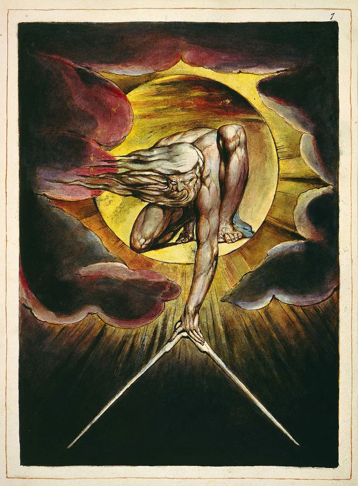
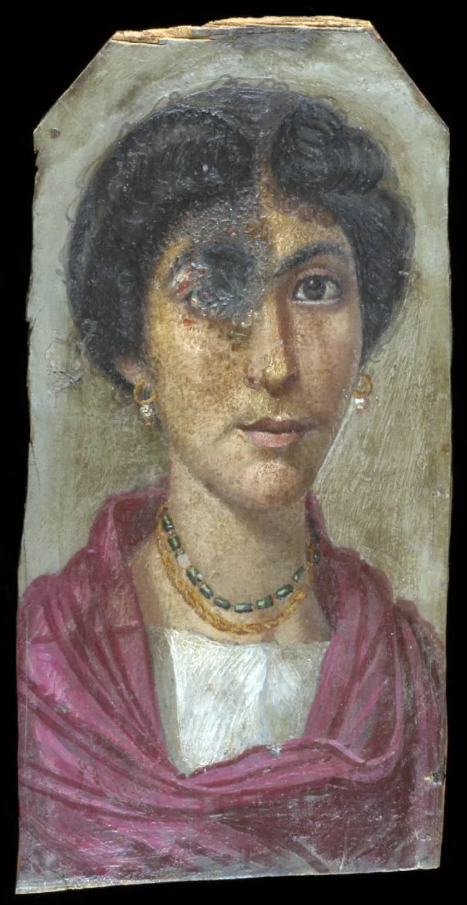

The text settles it — but concede the grievance first, or nothing will be heard.
The blond, blue-eyed Jesus of European art has no basis in Scripture at all. It is a cultural invention, and it did real damage.
Jesus was a first-century Judean — a brown-skinned Middle Eastern man. Isaiah 53:2 says there was nothing about his appearance that would draw a crowd.
Revelation 1:14-15 describes the glorified Christ with hair "white like wool" and feet "like unto fine brass, as if they burned in a furnace." Camps read that as a physical description proving he was Black.
Read Daniel 7 and Daniel 10 beside it. The wool-hair phrase describes the Ancient of Days in Daniel 7:9. The brass-feet phrase describes a separate figure, the glorious man of Daniel 10:5-6.
The imagery is about radiance and age, not skin. And in Revelation 1 the same figure has eyes like flames and a sword coming out of his mouth.
There is a clear answer on the reading, and the grievance is conceded. The concession has to come first or the answer will not be heard.
"The European paintings are wrong, and I'll say that first. Can we read Daniel 7 next to Revelation 1?"


Wool is a texture word, and a European Christ was preached by the enslavers.
Their case is that the church reads every bodily description of Christ as a symbol. It does so, they say, because the plain reading is unwelcome. Wool is a hair-texture word in ordinary speech. Bronze burned in a furnace is a dark, glowing metal, not a pale one. Daniel 10:6 was written by a Hebrew describing a figure he saw.
Add the flight into Egypt, where a family could vanish among Africans without remark (Matthew 2:13-15). Add Moses being taken for an Egyptian by Midianite women (Exodus 2:19).
Their graver charge is not really about the reading. For four hundred years a European Christ was preached to enslaved Africans by their enslavers. The work that image did was not an accident. Recovering a Christ who looks like the oppressed, they argue, is recovering the real Christ.
Concede the grievance first. Then Daniel 7 settles the reading of Revelation 1.
Conceded on the grievance, answered on the reading, and the concession must come first. The image was a weapon. The church that preached it mostly said nothing about the ships.
The imagery in Revelation 1 is lifted almost word for word from Daniel 7 and 10. The wool-hair phrase there belongs to the Ancient of Days (Daniel 7:9), and no reader treats God the Father as having an ethnicity; the brass-feet phrase belongs to a separate theophanic figure, the glorious man of Daniel 10:5-6. White as snow cannot be a texture claim. Eyes as a flame of fire and a face like the sun are in the same breath. Read consistently, Christ's eyes would literally burn.
So concede everything about European art without hesitation. Then note what the concession does not do. Grant the whole reading of Revelation 1, and you have established that Jesus was dark-skinned. No serious scholar disputes that. It says nothing about who constitutes Israel in 2026.